TD-018 / FOUNDATION REPAIR / CURRICULUM-011 COMPLETE
Shared gestures. Correct lifts. All three seeds pass.
The diagnostic exporter now inserts pen-up boundaries between gesture instances, preserving every contact point and continuous join within a gesture. The false comparison connectors are gone; the actual controller output never needed changing. This is synthetic shared-gesture learning, not an alphabet, learned word spacing or historical handwriting.
Corrected comparison — same physical scale, native 900 DPI
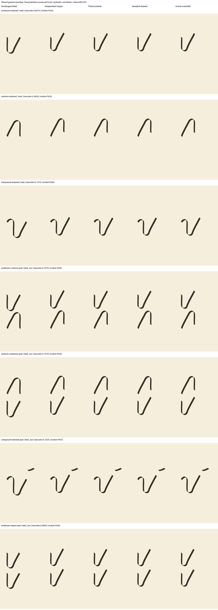
| Held-out lifted pairing | Learned / initial loss | Seeds 7 / 19 / 41 |
|---|---|---|
| Underturn → overturn | 0.157574 | Pass / Pass / Pass |
| Overturn → underturn | 0.157807 | Pass / Pass / Pass |
| Compound → terminal | 0.132465 | Pass / Pass / Pass |
| Repeated underturn, unseen scale | 0.066255 | Pass / Pass / Pass |
Every occurrence-local ratio also passes (largest 0.408835, limit <0.75). Actual/desired loss stays at or below 0.010016, corridor error 0.007936 mm and refinement endpoint difference 0.005718 mm. Exact ownership, open-return blank pockets and all eight adversarial controls pass. Fixed and placement-only controls do not satisfy all learning gates; whole-image averages do not override local failures.
Unchanged seed 7, completed remaining seeds
All six seed-7 candidate/selection files remain byte-identical to their original selection, with zero optimization. All 42 sampled/actual panels and 21 trace archives are unchanged. Each of the nine seed/ablation pairs replays 54 artifacts exactly in fresh processes. The continuation uses 6594 renders; retained failures add 3121, for 9715 across nine separate budgets. Each stays below 5000 renders / 1800 seconds.
- Seed 19 corrected sheet
- Seed 41 corrected sheet
- Shared constituents, direction arrows and contact ports
- Complete learning report and artifact identities
- No-refit, unchanged-output, test and replay verification
- Protocol, results, samples and bounded scope


Next: independent gesture acceptance
HANDVALIDATE-016 must independently evaluate the frozen candidates before S1-gesture or later-stage eligibility. No dynamic action, letter, word, fatigue, historical-hand or default-renderer promotion is implied.
Retained diagnostic failure — superseded only by the approved continuation
The original stop decision preserves invalid run-002 paired image evidence and the interrupted-worker budget. Its old comparison sheet contains false connectors in the first three paired columns, while sampled/actual columns correctly lift. The approved repair changes diagnostic contact encoding only; old files and flags are not rewritten.

Previous completed work: accepted source-tangent repair and primitive evidence
TD-018 / FOUNDATION REPAIR / SOURCE-TANGENT REPAIR — HISTORICAL STATUS
The same strokes. The motion gate now passes.
Actual learning, not a new letter grammar
The candidates and stored curves are unchanged, so the ink should look almost like the last samples. The opt-in repair derives velocity direction from validated source curves instead of separate straight-chord approximations at a subdivision seam. It keeps input contact positions, owners and the existing curve clock/controller/tool. No refitting, hidden lift, sample removal or relaxed acceleration gate. This is not historical handwriting or learned letters.
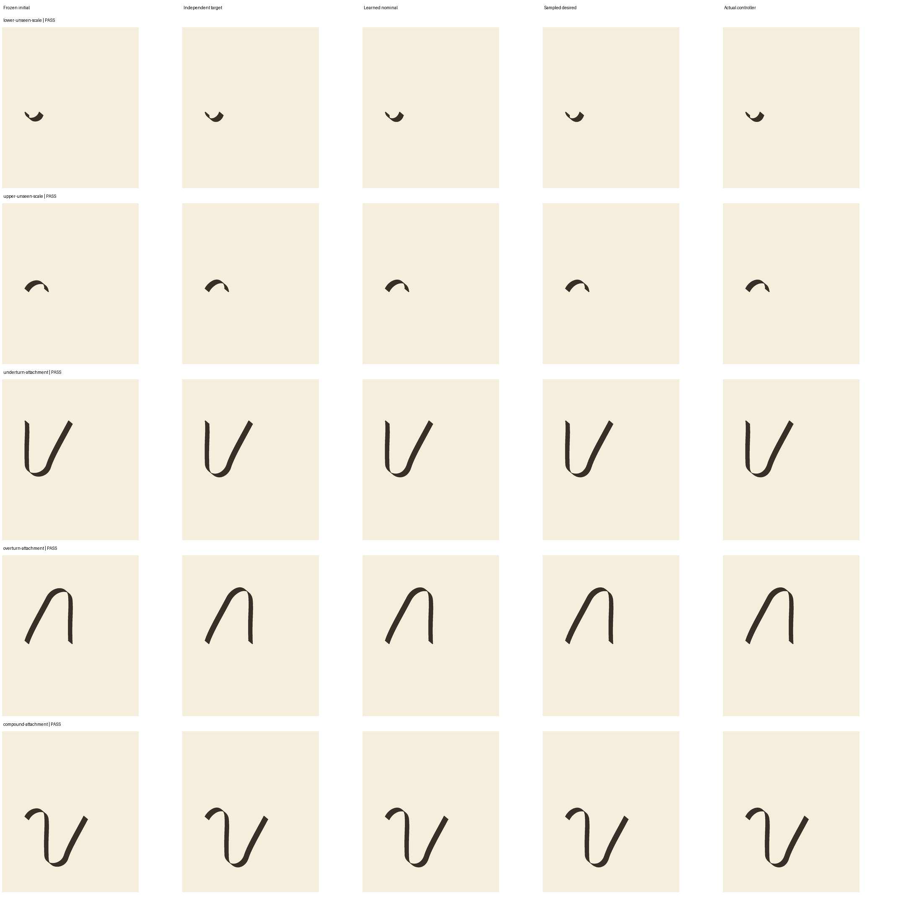
| Held-out fixture | Learned / initial loss | Every seed |
|---|---|---|
| Lower return, unseen scale | 0.333380 | Pass |
| Upper return, unseen scale | 0.302809 | Pass |
| Underturn attachment | 0.428036 | Pass |
| Overturn attachment | 0.218426 | Pass |
| Compound attachment | 0.316542 | Image and subdivision motion pass |
These are measured synthetic losses, not artistic-quality ratings. Compound family-local ratios remain upper 0.303233 and lower 0.327130. The successful evaluation uses 2562 renders, including replay; the retained adapter stop adds 972. Cumulative per-seed use is 1178 renders, within the original 5000 cap. Zero optimization. All 40 non-wall artifacts per seed replay byte-for-byte; candidate files are byte-identical to the original selection.
The original six remain shared and unchanged
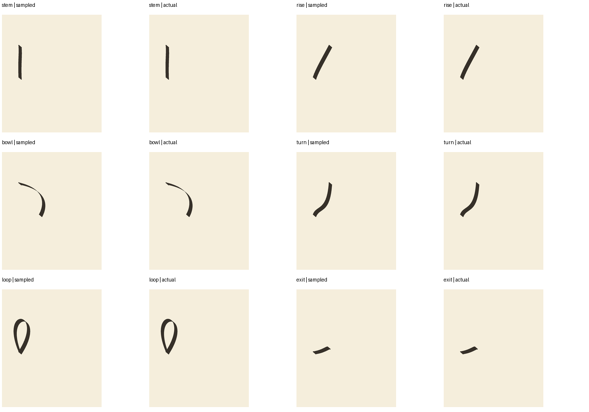
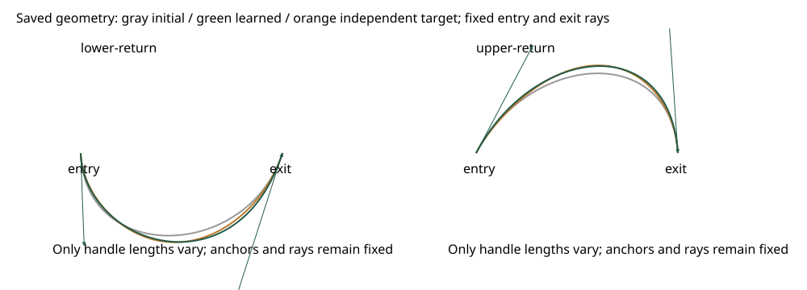
Next: learn shared gesture constructions
CURRICULUM-011 can now freeze the new independent report and required primitive inventory, then learn shared underturn, overturn and compound constructions with the primitives and tool fixed. Its runner must use curve-tangent-v1; the legacy reader/timing is not covered by this pass. Gesture fitting, learned letters/words, dynamic pen actions, historical handwriting and fatigue remain separate, unexecuted work.
- Current repair, evaluation, budgets and samples
- Passing new-mode S1 decision and artifact identities
- Independent adversarial guard sheet
- Current seed 19 sheet
- Current seed 41 sheet
- Retained earlier independent failure and diagnosis
- Exact failing samples and bounded repair proposal
- Failed S1 decision and complete artifact identities
- Independent connector, terminal and counter guards
- Earlier failed seed 19 sheet
- Earlier failed seed 41 sheet
- Prior learning protocol, result and replay
- Approved and executed no-refit measurement
- Full-frame report
- Clean-checkout verification
- Seed 19 complete sheet
- Seed 41 complete sheet
- Frozen fitted candidate
- Required compound failure, not an averaged pass


Retained cropped measurement — run-002, before the approved correction
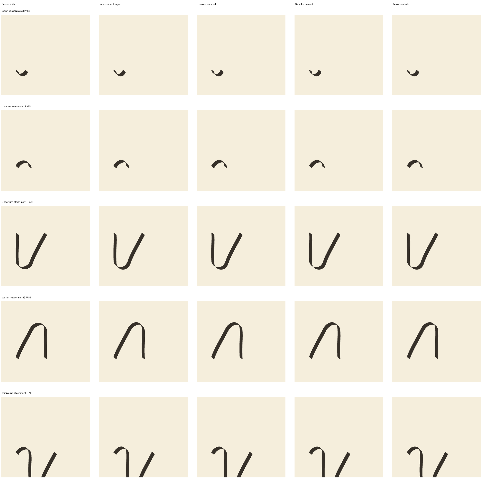
Earlier return contract audit — untrained initialization and inventory debt
TD-018 / FOUNDATION REPAIR / RETURN CONTRACT RUN 001
Two new return shapes. Explicit connections.
Six frozen primitives + two untrained returns
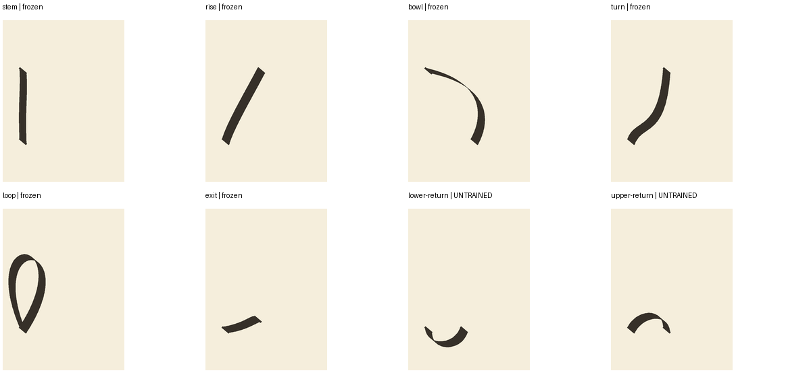
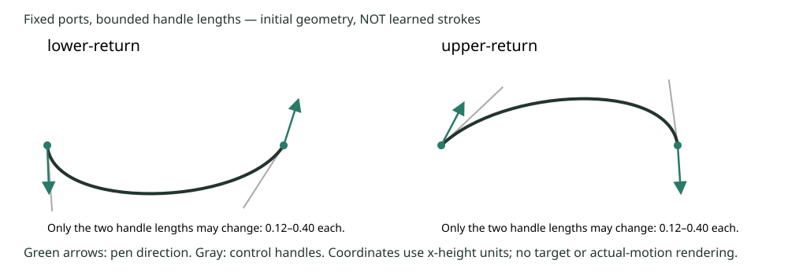
Stroke combinations now have visible expansion
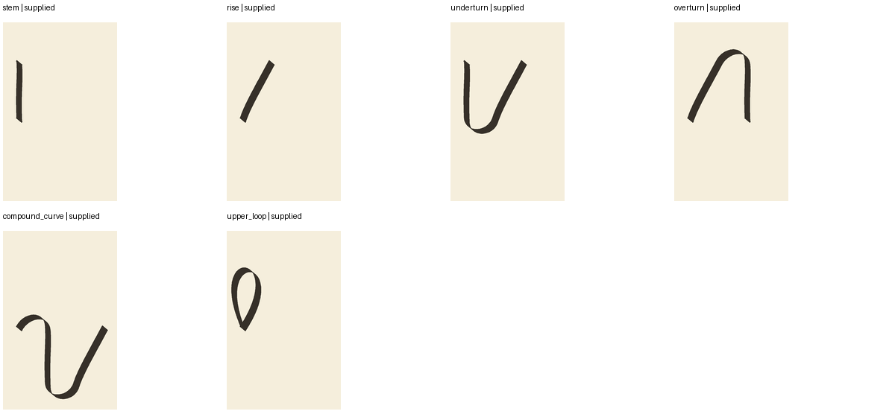
A bounded construction checklist—not an accepted alphabet
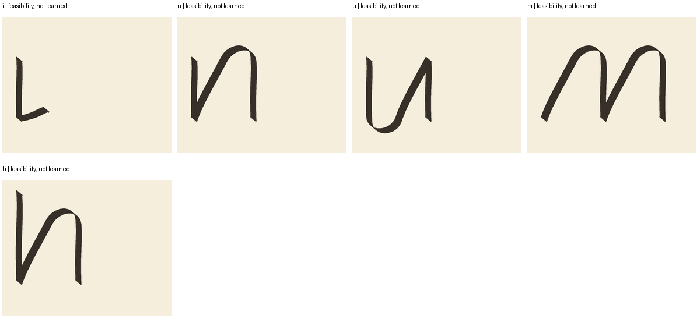
| Inventory | Audit result |
|---|---|
| i / n / u / m / h | Supplied constructions: 2 / 4 / 4 / 6 / 4 expanded strokes |
| r / l | Partial fragments only; no recipe admitted |
| o / a / d / e / g | Unsupported; counter, bowl or descender attachments unresolved |
| Opposite bowl / lower loop | Missing, not aliased or reflected from existing shapes |
| Composition cap | New opt-in reader: six actual primitive occurrences; old reader remains four |
The m scaffold uses two explicitly lifted three-piece arches. Six is the smallest cap for this frozen construction set—not a universal calligraphic lower bound. Four references per gesture, eight families/gestures, two recipe alternatives and existing transform limits remain intact.
Next: learn the two returns
CURRICULUM-010: first regenerate matching motion/baseline evidence, then fit only the two new return families against independent analytic targets. Endpoints, port rays, old-six geometry and the tool remain fixed. Attachment topologies are reserved for held-out evaluation. HANDVALIDATE-015 independently decides whether the new primitives are accepted before larger gesture learning.
The audit uses 22 nominal diagnostic renders in 1.168160 seconds, zero optimization and zero training/target renders. Clean replay is byte-identical. Sixteen new contract tests pass; expanded local and clean suites each have 138 passes and the same pre-existing constructor-test failure. No new actual-motion or historical-hand acceptance is claimed.
- Audit result, scope and replay
- Full direction, port, topology, counter and attachment tables
- Untrained initial model
- Independent target and held-out topology specifications
- Clean-checkout verification
- Budget and status ledger
Earlier motion acceptance — run 005; refresh required after compiler changes
This section records the pre-audit fixed-tool motion result. Its acceptance does not automatically transfer to the changed compiler or new untrained geometry.
TD-018 / FOUNDATION REPAIR / RUN 005
Stable motion. A curve-derived clock.
What the clock fix changes
Previously the planner added distances between sampled points. More samples measured a slightly longer path, causing timing to drift across repeated gestures. It now measures distance along the underlying curves and retains each sample's source curve and parameter. Source positions stay unchanged; no nearest-point guessing confuses loops or overlaps.
| Check | Run 004 | Run 005 |
|---|---|---|
| Worst arc-density contact-time shift | 0.437750 ms | 0 ms in all frozen fixtures (limit 0.1 ms) |
| Exact cubic subdivision event shift | Within limit | At most 8.9e-16 seconds |
| Maximum target contact lag | 0.007517 mm | 0.007411 mm (limit 0.25 mm) |
| Endpoint/image, corner, landing and acceleration gates | Pass | Pass, unchanged limits |
| Fresh original six-primitive baseline | Pass | Pass, no refitting |
| Required motion checks | 233 / 239 | 239 / 239 |
Corner slowing and air braking are retained. No pose reset, hidden lift, new ink settings, geometry correction or relaxed timing threshold is used. The numerical integrator has frozen error estimates and hard work limits; new curves still require fresh validation.
The six existing stroke primitives
Stem, rise, bowl, turn, loop and exit. These are the frozen synthetic-trained families revalidated with the new clock—not newly trained or a complete historical vocabulary.
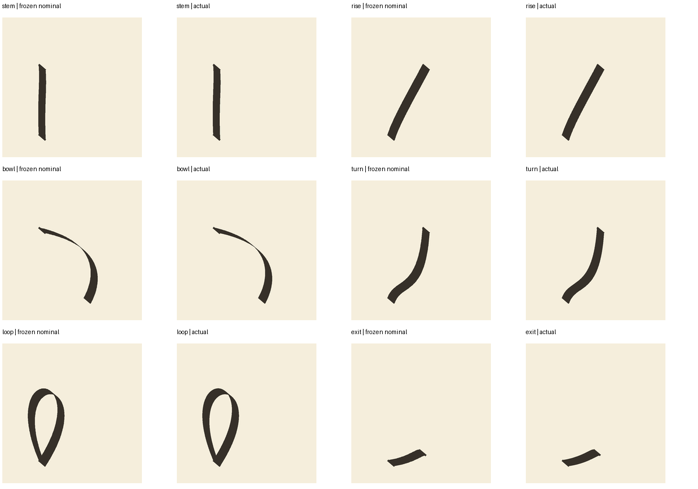
Motion comparisons—not learned letters
These controlled fixtures repeat a downstroke plus its terminal, alone, lifted, overlapped and separated by gaps. The old i/u identifiers name supplied constructions, not learned letters. A clock-only repair should leave the ink looking almost the same; its benefit is stable measured timing.
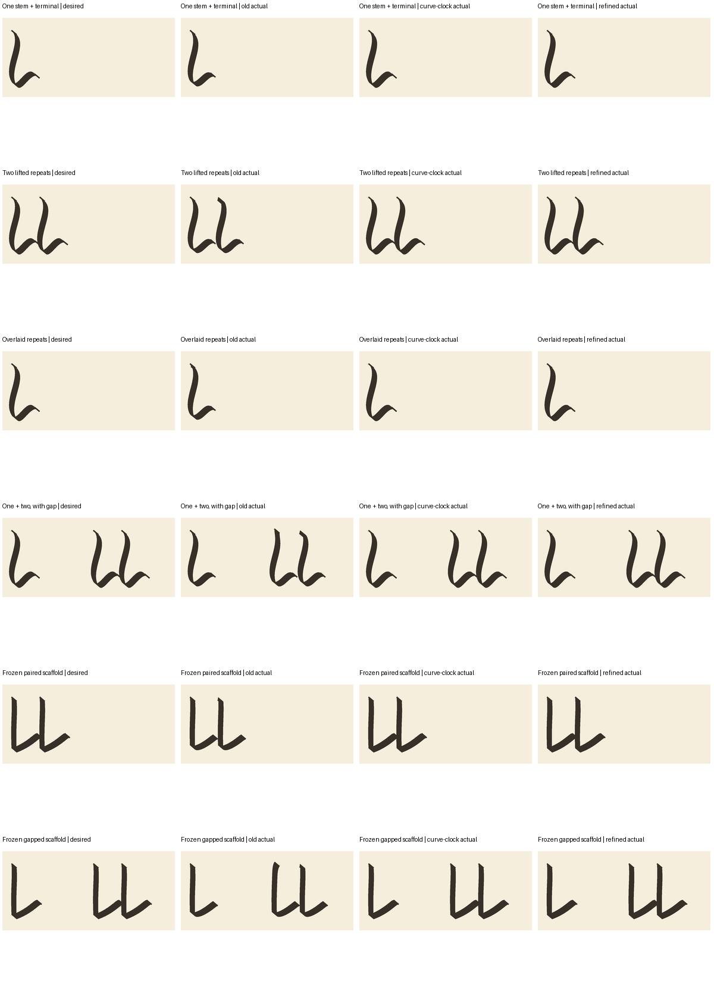
Presentation rerenders the saved paths at native 900 DPI and only downsamples smoothly. Evaluation remains at its frozen 180 DPI; these are not enlarged low-resolution pixels or retouched ink.
What is accepted—and what comes next?
Accepted: fixed-tool synthetic motion plus fresh verification of the original six primitives. The conservative speed policy is not optimized rhythm: the saved paired scaffold takes 3.571722 seconds. Natural rhythm, dynamic actions, new letters, real-reference recovery and fatigue remain separate work.
Next: GESTURE-002's audit of lower/upper return strokes, their connection ports and composition limits. After that, train the new primitive families and independently evaluate them before learning larger gestures. The other five foundation Advances remain planned; this run performs no new fitting.
Evidence and replay
One authorized candidate: 303 diagnostic/baseline/presentation renders in 22.987616 seconds; zero optimization or revisions. Clean verification separately uses 303 renders in 19.227469 seconds. Forty focused tests pass; expanded local and clean suites each have 106 passes and one pre-existing constructor-test failure. The installed strict PR-ID parser limitation and ten pre-existing artifact-doctor issues are disclosed in the receipt, not relabeled as passing CI.
- Current results, scope and replay commands
- All 239 gates and measurements
- Clean-checkout verification
- Executed curve-clock design
- All five attempts and budgets
- Next Advance: return vocabulary and ports
- Retained pre-clock failure
Historical corner comparison — run 003 versus run 004
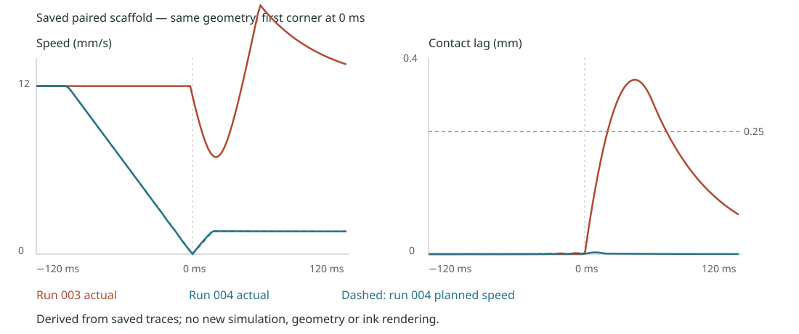
Historical re-entry plot — run 002, before this fix
This is retained evidence of the old landing problem, not the current result.